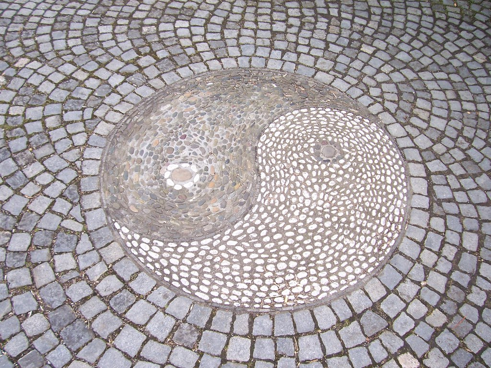

Home page Yin
Terraria
With Terraria 1.4 AKA "Journeys End" finally out I figured I would make a build guide for myself and others that enjoy playing this game as much as I do.
Although I'm not familiar with the new gear so I'll add what I see fit when I come across it in my playthrough.
There are four main classes, each one has it's own unique fighting style that fits different types of people.
- Melee
- Ranged
- Magic
- Summoner
Yin
Yang
